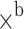

Astrea: Automatic Generation of SHACL Shapes from Ontologies
Andrea Cimmino
Ontology Engineering Group, Universidad Politécnica de Madrid, Madrid, Spain
Alba Fernández-Izquierdo
Ontology Engineering Group, Universidad Politécnica de Madrid, Madrid, Spain
Raúl García-Castro
Ontology Engineering Group, Universidad Politécnica de Madrid, Madrid, Spain
 Corresponding author.
Corresponding author.Abstract
Knowledge Graphs (KGs) that publish RDF data modelled using ontologies in a wide range of domains have populated the Web. The SHACL language is a W3C recommendation that has been endowed to encode a set of either value or model data restrictions that aim at validating KG data, ensuring data quality. Developing shapes is a complex and time consuming task that is not feasible to achieve manually. This article presents two resources that aim at generating automatically SHACL shapes for a set of ontologies: (1) Astrea-KG, a KG that publishes a set of mappings that encode the equivalent conceptual restrictions among ontology constraint patterns and SHACL constraint patterns, and (2) Astrea, a tool that automatically generates SHACL shapes from a set of ontologies by executing the mappings from the Astrea-KG. These two resources are openly available at Zenodo, GitHub, and a web application. In contrast to other proposals, these resources cover a large number of SHACL restrictions producing both value and model data restrictions, whereas other proposals consider only a limited number of restrictions or focus only on value or model restrictions.
- Resource type:
- Dataset & Software
- Astrea-KG:
- http://astrea.helio.linkeddata.es/
- Astrea-KG DOI:
- https://doi.org/10.5281/zenodo.3571009
- Astrea application:
- http://astrea.linkeddata.es/
Introduction
Knowledge Graphs (KGs) are becoming pervasive on the Web [5]. Since 2014 there is a growing number of KGs from different domains that publish a quite large amount of data using RDF and modelled with ontologies [19]. As a result, in the last decade a considerable effort has been put in developing ontologies for specific domains [21]. Due to the growth of these public available KGs, the W3C has promoted a recommendation called SHACL (Shapes Constraint Language) to validate the RDF graphs [2]. In the last years KGs validation by means of SHACL shapes has gained momentum and has become a relevant research topic [14].
A shape defines a set of restrictions that data from a KG must fulfil. There are two kinds of restrictions [15], those that refer to the data model, e.g., cardinality, and those that apply to the data values, e.g., string patterns. Due to this reason developing shapes has become the cornerstone solution to validate KG data. Nevertheless, developing data shapes is a complex task due to the potential size of the data and all the available restrictions that require a deep domain knowledge (like the one encoded in ontologies); in addition, developing shapes manually is a dull-task and error-prone.
Different proposals to assist shapes generation have been proposed. Some focus on learning shapes from a set of data [1, 7, 16, 22]; these proposals cover a small amount of the restrictions, and most of the learnt restrictions refer to value restrictions. Nevertheless, since KGs are modelled by ontologies, when these proposals learn model restrictions from data they do not take such ontologies into account, leading to a potential discordance with the model. A lower number of proposals aim at aligning the restrictions encoded by OWL constructs with those of SHACL [12, 17]. Unfortunately, these proposals cover a small number of constructs, and do not generate any shapes.
In this paper two resources to generate automatically SHACL shapes [13] from a set of ontologies are introduced. The resources are: A) the Astrea-KG1 that contains 158 mappings, each of which relates an ontology constraint pattern with an equivalent SHACL constraint pattern; and B) the Astrea2 tool that automatically generates SHACL shapes for a set of input ontologies by using the mappings provided by the Astrea-KG. The mappings in the Astrea-KG are endowed from a theoretical point of view, presented as ontology and SHACL construct patterns; in addition, the Astrea-KG also contains an implementation as SPARQL CONSTRUCT queries for such mappings. These queries issued over a set of ontologies produce their SHACL shapes, which is the task performed by Astrea.
The shapes generated with the resources presented in this paper contain data and model restrictions, covering 60% of the SHACL available restrictions. Astrea has been evaluated by performing two experiments. The former consists in generating the SHACL shapes of 5 well-known ontologies, such as SAREF or SSN, and two ontologies developed in the context of two European projects. The latter consists in analysing the expressivity and richness of the generated shapes. For the sake of readability, Table 1 shows the prefixes and their associated namespaces that are used through the paper.
Table 1.
Summary of the prefixes used through the paper
The rest of this article is structured as follows. Section 2 reports an analysis of some proposals from the literature; Sect. 3 introduces and details the mappings published in the Astrea-KG; Sect. 4 reports the implementation of Astrea that produces shapes using the Astrea-KG; Sect. 5 explains the experiments carried out in this article; finally, Sect. 6 recaps our findings and conclusions.
Related Work
The increasing uptake of SHACL shapes as a mechanism for validating RDF data has lead to the proposal of several approaches to assist practitioners in their generation. Approaches can be classified into two types: A) Automatic generation of shapes from data, which aim at learning shapes from a training data set; and B) Analysis of the equivalence between ontology and SHACL restrictions. Table 2 summarises these approaches indicating the source of the shapes and whether they support their automatic generation.
Table 2.
Comparison of approaches that deal with shapes generation
| Proposal | Extracted from data | Extracted from ontologies | Automatically generated |
|---|---|---|---|
| Mihindukulasooriya et al. |  |  |  |
| Fernández-Alvarez et al. |  |  |  |
| Spahiu et al. |  |  |  |
| Boneva et al. |  |  | |
| Pandit et al. |  |  |  |
| Knublauch |  |  |  |
| Astrea |  |  |
 Supported
Supported
 Not supported
Not supported
Regarding the approaches oriented to the generation of shapes through data, Mihindukulasooriya et al. [16] aim at using machine learning techniques to produce RDF Shapes. The authors propose a data-driven approach for inducing integrity constraints for RDF data using data profiling, which are then combined into RDF Shapes. Although the proposed approach is defined in a generic way, it is validated using only cardinality and range constraints.
Another work related to the generation of shapes from data is the one presented by Fernández-Alvarez et al. [7], which infers Shape expressions associated to the classes in an RDF graph. This approach consists in the following steps: (1) find all the instances of the target classes; (2) for each class, find all the triples whose subject is one of its instances and use them all to build a profile of the class; and (3) turn each profile into a shape written in ShEx language3.
The work of Spahiu et al. [22] was also designed to generate shapes from RDF data. It uses semantic profiles, i.e., a summary that provides an abstract but complete description of the dataset content and statistics, of a given RDF graph and translates them into SHACL shapes.
Finally, Boneva et al. [1] presented Shape Designer, a graphical tool for building SHACL or ShEx constraints for an existing RDF graph. Shape Designer provides a set of queries and shape patterns that can be selected by the user to generate a shape constraint. Such shape constraint can then be added to the SHACL or ShEx schema under construction.
Concerning the analysis of the equivalence between ontology and SHACL restrictions, the position paper presented by Pandit et al. [17] encourages the reuse of Ontology Design Patterns (ODPs) [8] beyond the data modelling phase to generate SHACL shapes. The authors discuss the similarity that could be obtained between the axioms used to model ODPs and the constraints within SHACL shapes. However, this work does not identify such equivalences between ontologies and SHACL.
To conclude, Knublauch [12] proposes a comparison between OWL and SHACL. This work associates each OWL constraint with its similar SHACL constraint, claiming that a syntactic translation between OWL and SHACL is feasible. Although the author of this work identified similarities between OWL and SHACL, he relates an OWL construct with at most two SHACL constructs. Therefore, it is not taken into account the use of patterns, which hinders the translation.
The resources presented in this paper aim at assisting the automatic generation of SHACL shapes from ontologies, taking into account OWL 2, RDFS, and XSD restrictions. As it is illustrated in Table 2, although there are approaches that deal with shapes extracted from ontologies, only Astrea supports their automatic generation. However, this work is grounded on these previous works that discuss the similarity between OWL and SHACL constraints.
Astrea-KG Mappings
The cornerstone element to automatically generate shapes from a set of ontologies are the mappings within the Astrea-KG. These mappings relate one or more ontology construct patterns with the equivalent SHACL construct patterns that validate such ontology construct pattern. However, OWL and SHACL are not considered equivalent in their interpretation. There are differences in how OWL interprets restrictions (for inferencing), and how SHACL interprets constraints (for validation) [12].
The ontology construct patterns include constructs from the well-known OWL 2, RDFS, and XSD specifications. In addition, the mappings have been implemented as SPARQL CONSTRUCT queries in which the WHERE clause contains the ontology construct patterns and the CONSTRUCT clause contains the SHACL construct patterns.
Notice that from a conceptual point of view the mappings are bi-directional, since they relate construct patterns. Nevertheless, their implementation is not bi-directional: the current SPARQL queries identify ontology construct patterns and translate them into the equivalent SHACL construct pattern.
Previous works already stated the similarity between OWL and SHACL constructs. However, during the development of the mappings we noticed that the relation between single constructs was not enough to generate the shapes. The reason is that an ontology construct may be specified within different contexts and the equivalent SHACL construct may change depending on such context. As a result, the mappings relate patterns of constructs rather than just constructs.
For instance, the RDFS construct rdfs:range can be considered equivalent to the SHACL construct sh:class. But in order for such equivalence to be correct the rdfs:range has to be defined in the context of an owl:ObjectProperty. Listing 1.1 shows the SHACL construct pattern of the sh:class that is related to the ontology construct rdfs:range. Notice that this SHACL construct makes only sense in the context of a sh:PropertyShape.
Listing 1.2 reports the ontology construct pattern for rdfs:range that is equivalent to the one of Listing 1.1. However, the statement rdfs:range could be expressed alternatively: instead of having an URL in its range it may have a blank node that has different properties (owl:unionOf, owl:someValuesFrom, or owl:allValuesFrom among others). For these cases other ontology construct patterns must be specified, like the one reported in Listing 1.3. Both ontology construct patterns are different yet they are equivalent to the same SHACL construct pattern.
As it can be noticed the constructs are not enough to automatically generate shapes, patterns of constructs are required in the mappings to generate them. Also, it is worth mentioning that different ontology construct patterns may generate the same SHACL construct pattern, or vice versa.
Methodology for Mappings Generation
The mappings were designed and written following a thorough process, which consist in the following steps:
To manually list OWL 2, RDFS, XSD constructs. Based on the OWL 2 specification [11], a list of OWL 2 constructs were gathered from the OWL 2 Web Ontology Language Primer [11]. It was decided to consider every OWL 2 construct except for the versioning constructs and the instance ones. Thus, this list includes 55 constructs out of the 88 total constructs defined in the OWL 2 specification. The same process was performed for the RDFS [3] and XSD [18] specifications obtaining 8 and 37 constructs, respectively.
To manually list SHACL constructs. Based on the SHACL specification [13], the list of SHACL restrictions was collected from the Shapes Constraint Language specification. It was decided to consider every SHACL restriction except for those related to Validation Report restrictions, since they do not add additional content to the shape. Thus, the list includes 58 constructs out of the 301 defined in the SHACL specification document.
To review existing relations among ontologies and SHACL. Some previous works have attempted to relate OWL 2 constructs with the SHACL constructs [12, 17]. Some authors hypothesised that construct patterns would be required to automatically generate shapes [17]. These proposals were taken as starting point to develop the Astrea-KG mappings.
To generate mappings between ontology construct patterns and their equivalent SHACL construct patterns. For each ontology construct pattern, the equivalent pattern in SHACL has been proposed. It should be mentioned that an ontology construct pattern can be equivalent to multiple SHACL construct patterns, and vice versa.
To include data restrictions. The only restrictions over data that ontologies encode is the xsd:pattern one. Nevertheless, the XSD schema specifies different datatypes that have specific restrictions over values [18], such as their maximum, minimum, or lexical pattern. We incorporated to the mappings the restrictions specified by the XSD datatype anytime in an ontology a XSD datatype was specified. For instance, when a xsd:nonNegativeInteger is defined as datatype for a literal it means that it follows the pattern “”, an has a minimum inclusive of 0.
To implement executable-mappings. Finally, all the identified equivalences between the ontology construct patterns (OWL, RDFS, and XSD) and the SHACL construct patterns were implemented as SPARQL queries.
Mappings Ontology
The Astrea-KG contains and publishes the information of the 157 defined mappings. A vocabulary to model these mappings has been defined4. Figure 1 shows an overview of such vocabulary, which models the relation between the mappings between ontology and SHACL construct patterns, and the mapping implementations as SPARQL queries.
As depicted in Fig. 1, two Patterns can be mapped by each other, which indicates that they are equivalent. Any of these patterns could be an OntologyPattern, if the pattern includes statements that contain any construct from OWL, RDFS, or XSD. Alternatively, a pattern may be a SHACLPattern if it includes statements that contain SHACL constructs. A Pattern can be mapped by other Pattern, and this relation is symmetric. Furthermore, each Pattern is related to a MappingImplementation which contains the necessary information to translate this source pattern to the equivalent target pattern.
An example of mapping is depicted in Fig. 2. It can be observed that the OntologyPattern is capturing the cardinality pattern when it is specified as an owl:Restriction for an owl:Class. Similarly, the SHACLPattern refers to a sh:PropertyShape related to a sh:NodeShape, which has a sh:minCount and sh:maxCount. These two patterns are related by means of the isMappedBy relation, which indicates that the OntologyPattern is mapped by the SHACLPattern and vice versa.
Finally, in order to generate a shape the OntologyPattern is related to a MappingImplementation instance that implements such translation by means of a SPARQL query; notice that the WHERE clause encodes the ontology construct pattern and the CONSTRUCT the SHACL construct pattern.
Astrea
The tool Astrea aims at reading the Astrea-KG, fetching the mappings within, and executing their implementation, i.e., the SPARQL queries, over a set of ontologies. The architecture of Astrea is depicted in Fig. 3; the depicted components and their performed tasks are the following:
OntologyManager: this component is fed with a set of ontology URLs provided as input (step 1 in Fig. 3). These ontologies are downloaded and, then, for each ontollogy the OntologyManager checks if the statement owl:import is present. When such statement is present, the ontology URL specified is downloaded by the OntologyManager (steps 2 and 3 in Fig. 3). Finally, all the ontologies retrieved are sent to the KG-Manager (step 4 in Fig. 3).
Astrea-KG: the Astrea-KG is the KG previously described and available online. The Astrea tool reads the latest version of this KG, entailing that anytime a mapping is included, or modified, Astrea is aware of such update.
KG-Manager: Then, all the mapping implementations are retrieved from the Astrea-KG (step 5 in Fig. 3). Since the implementations of the mappings are CONSTRUCT queries, they produce as result an RDF graph that contains the SHACL shapes associated to the ontology construct mapping encoded in the CONSTRUCT query. The KG-Manager issues all these queries over the ontologies provided by the OntologyManager, during step 4. As a result, the output of each query is stored in the same RDF graph. Finally the RDF graph containing all the generated SHACL shapes is returned (step 6 in Fig. 3).
Expressivity of the SHACL Shapes Generated by Astrea
Table 3 summarises the SHACL restrictions that are supported by Astrea using the Astrea-KG mappings. The symbol “ ” indicates that Astrea supports the restriction, while “
” indicates that Astrea supports the restriction, while “ ” indicates that Astrea supports it partially, and “” that it is out of scope of Astrea.
” indicates that Astrea supports it partially, and “” that it is out of scope of Astrea.
Table 3.
List of SHACL restrictions supported by Astrea
| SHACL restriction | Coverage | SHACL restriction | Coverage |
|---|---|---|---|
| sh:Shape |  | sh:maxInclusive |  |
| sh:NodeShape |  | sh:maxLength |  |
| sh:PropertyShape |  | sh:minCount |  |
| sh:nodeKind |  | sh:minExclusive |  |
| sh:targetClass |  | sh:minInclusive |  |
| sh:targetNode |  | sh:minLength |  |
| sh:targetObjectsOf |  | sh:node |  |
| sh:targetSubjectsOf |  | sh:not |  |
| sh:value |  | sh:or |  |
| sh:path |  | sh:pattern | |
| sh:inversePath | sh:flags |  | |
| sh:alternativePath |  | sh:property |  |
| sh:zeroOrMorePath |  | sh:qualifiedMaxCount |  |
| sh:oneOrMorePath |  | sh:qualifiedValueShape | |
| sh:zeroOrOnePath |  | sh:qualifiedValueShapesDisjoint |  |
| sh:and |  | sh:qualifiedMinCount |  |
| sh:class |  | sh:uniqueLang | |
| sh:closed |  | sh:xone |  |
| sh:datatype |  | sh:defaultValue |  |
| sh:ignoredProperties |  | sh:description |  |
| sh:maxCount |  | sh:group | |
| sh:disjoint |  | sh:name |  |
| sh:equals |  | sh:order | |
| sh:hasValue |  | sh:BlankNode |  |
| sh:in |  | sh:BlankNodeOrIRI |  |
| sh:languageIn | sh:BlankNodeOrLiteral | ||
| sh:lessThan |  | sh:IRI |  |
| sh:lessThanOrEquals |  | sh:IRIOrLiteral |  |
| sh:maxExclusive |  | sh:Literal |  |
 Covered
Covered
 Partially covered
Partially covered
 Not covered
Not covered
Not covered due to data value restrictions
Not covered due to practitioner-required restrictions
Not covered due to unfeasible restrictions
From Table 3 it can be observed that Astrea covers 60% of the SHACL restrictions and 40% are not supported. Notice that the sh:pattern restriction is only partially covered. In addition, the unsupported restrictions can be classified as follows: data value restrictions, practitioner-required restrictions, and unfeasible restrictions. Next, we provide an insight for the partially covered restrictions and for the three unsupported types of restrictions.
Partially Covered: ontologies infrequently contain patterns for data values, although they could be specified by means of the xsd:pattern statement. Nevertheless, it is common to assign a XSD datatype to data values; these datatypes have restrictions defined by the W3C [18]. The mappings are endowed to cover the patterns specified by the xsd:pattern statement. Additionally, when a data value has a XSD datatype with no pattern defined, the mappings automatically inject the restrictions defined by the W3C. As a result, Astrea covers sh:pattern restrictions under these two circumstances.
In addition, the sh:qualifiedValueShape restriction specifies the condition that a specified number of value nodes needs to conform to. Thus, the range of this construct could be any shape that refers to a constraint, e.g., the class of the node, the possible list of values of the node or the pattern that the node should follow. Astrea only covers the sh:qualifiedValueShape restriction when it defines the specific class of the node.
Data Value Restrictions: the majority of the restrictions from Table 3 are not supported because they refer to data instances; which are 20.7% of the unsupported restrictions. Due to the fact that Astrea only takes ontologies into account, and they are not expected to have data instances, supporting these restrictions is not feasible. These restrictions are: sh:targetObjectsOf, sh:targetSubjectsOf, sh:alternativePath, sh:zeroOrMorePath, sh:oneOrMorePath, sh:zeroOrOnePath, sh:ignoredProperties, sh:lessThan, sh:BlankNode, sh:order, sh:lessThanOrEquals, and sh:BlankNodeOrLiteral.
Practitioner-Required Restrictions: a smaller amount of restrictions, i.e., 13.8%, require a practitioner to establish them. These restrictions depend on a domain problem and the granularity of the desired validation using shapes. These restrictions are: sh:targetNode, sh:value sh:flags, sh:defaultValue, sh:group, sh:qualifiedValueShape, sh:qualifiedValueShapeDisjoint, and sh:close.
Unfeasible Restrictions: 5.5% of the restrictions were not supported because their equivalent ontology construct patterns were not found. These restrictions are: sh:languageIn, sh:uniqueLang, and sh:xone.
Availability, Sustainability, Extensibility and Maintenance of the Resources
The Astrea tool is available as an online web application (see Footnote 2). This web application also provides a REST API and its documentation5. Furthermore, the code of the tool is also available in GitHub6 under the Apache 2.0 licence7. The maintenance of the tool will be facilitated through the continuous update of the mappings, and the fact that the architecture is automatically aware of these changes.
The current version of the Astrea-KG is available as a Zenodo resource. It has a canonical citation using a DOI (https://doi.org/10.5281/zenodo.3571009) and is published under the Creative Commons Attribution 4.0 International8 (CC BY 4.0) license. In addition, the KG is publicly available for third-party contributions or reusability (see Footnote 1). A further analysis will be performed in order to include, if possible, new mappings.
Experiments
In order to validate the two resources of this paper, i.e., Astrea-KG and Astrea, we performed two experiments. Both experiments rely on a set of well-known ontologies, most of which are standards, namely: W3C Time [4], ETSI SAREF [6], ETSI SAREF extension for environment9 (S4ENVI), ETSI SAREF extension for buildings [20] (S4BLDG)10, and W3C SSN [10] and DBpedia 2016-1011. In addition, experiments relied on two ontologies developed in the context of the European Projects VICINITY and DELTA, namely: the VICINITY ontology12 and the DELTA ontology13. All the shapes generated during both experiments using Astrea were manually validated in term of syntax correctness using the SHACL playground14.
Bear in mind that whether an ontology uses the term owl:imports the referenced ontology will be loaded and its shapes generated; for example, SAREF imports W3C Time or SSN imports SOSA [9], or VICINITY imports other well-known ontologies. Consider that the restrictions in the shapes depend directly on how the ontologies are expressed, using third-party ontologies provides a fair input for Astrea since they have not been biased to produce especially expressive and rich shapes.
In addition to these experiments the Astrea implementation has been tested by means of 108 JUnit tests, available on its GitHub repository (see Footnote 6). For each test the expected SHACL shape was defined, and an ontology fragment was provided as input to Astrea. As a result, the expected output was compared to the actual result of Astrea.
SHACL Shapes of Public Available Ontologies
The first experiment consists in generating the SHACL shapes of all the ontologies previously mentioned, measuring the number of classes and properties (data and object properties) within and the number of sh:NodeShape and sh:PropertyShape generated. In addition, the total number of SHACL restrictions and the average time that took generating 10 times each of the shapes is reported. Table 4 recaps the results of this experiment.
Table 4.
SHACL shapes generated with Astrea from a set of ontologies
| Ontology | Classes | Properties | Node shapes | Property shapes | Total restrictions | Generation time (s) |
|---|---|---|---|---|---|---|
| DELTA | 74 | 100 | 74 | 166 | 1,269 | 0.77 |
| DBpedia | 760 | 2,865 | 760 | 3,247 | 26,940 | 4.73 |
| SAREF | 112 | 97 | 112 | 238 | 2,076 | 2.05 |
| S4BLDG | 71 | 263 | 71 | 570 | 3,533 | 0.48 |
| S4ENVI | 30 | 37 | 30 | 86 | 699 | 0.35 |
| SSN | 22 | 38 | 22 | 87 | 628 | 1.23 |
| Time | 20 | 61 | 20 | 113 | 807 | 0.92 |
| VICINITY | 94 | 155 | 94 | 210 | 1,728 | 1.49 |
The generation times for the ontologies are quite low. Figure 4 depicts how the generation times are related to the number of total SHACL restrictions generated in the shapes. No correlation can be analysed since Astrea requests to remote servers the code of the ontologies when generating shapes on the fly. As a result, some servers can answer faster with large ontologies and others slower with smaller ones. This action introduces noise that prevents studying the scalability or the correlation between SHACL restrictions and generation time.
Conclusions: the ratio of classes is held in the generated shapes. The ratio of properties is lower than the property shapes, the reason is the existence of restrictions for properties that apply only when they are used by a specific class producing more property shapes. Unfortunately, analysing the scalability is unfeasible in this scenario as previously explained. Nevertheless, generating shapes is not a critical task and the generation times for large ontologies such as DBpedia are rather low; less than 5 s for producing 26,940 SHACL restrictions.
SHACL Restrictions Produced by Astrea
In this experiment the expressiveness and richness of the generated shapes for the ontologies considered are analysed; the expressiveness and richness refer to the variety of SHACL constructs that a generated shape may contain. For this purpose, Table 5 reports all the restrictions that can be defined in SHACL and, for each, which were produced for the given ontologies. Notice that the last row reports the total number of SHACL restrictions that a shape has.
Table 5.
Expressivity of the generated SHACL shapes
| SHACL restriction | DBpedia | DELTA | SAREF | S4BLDG | S4ENVI | SSN | Time | VICINITY |
|---|---|---|---|---|---|---|---|---|
| sh:NodeShape | 760 | 74 | 112 | 71 | 30 | 22 | 20 | 94 |
| sh:PropertyShape | 3,247 | 166 | 238 | 570 | 86 | 87 | 113 | 210 |
| sh:nodeKind | 4,037 | 240 | 350 | 641 | 116 | 109 | 133 | 304 |
| sh:targetClass | 760 | 74 | 112 | 71 | 30 | 22 | 20 | 94 |
| sh:path | – | 67 | 141 | 307 | 49 | 49 | 52 | 60 |
| sh:inversePath | – | – | 1 | – | 1 | 1 | – | 2 |
| sh:and | – | – | – | – | – | – | – | – |
| sh:class | 828 | 42 | 84 | 218 | 37 | 41 | 33 | 89 |
| sh:datatype | 1,760 | 33 | 37 | 172 | 24 | 1 | 32 | 28 |
| sh:disjoint | 25 | 1 | 5 | 2 | 11 | 23 | 1 | 6 |
| sh:equals | 634 | 1 | – | – | – | – | – | 3 |
| sh:hasValue | – | – | 15 | – | 3 | – | 5 | – |
| sh:in | – | – | – | – | – | – | – | – |
| sh:maxCount | 30 | – | 42 | 1 | 9 | 15 | 38 | 16 |
| sh:maxExclusive | – | – | – | – | – | – | – | – |
| sh:maxInclusive | 2 | – | – | – | – | – | – | – |
| sh:maxLength | – | – | – | – | – | – | – | – |
| sh:minCount | – | – | 19 | – | – | – | 19 | – |
| sh:minExclusive | – | – | – | – | – | – | – | – |
| sh:minInclusive | 285 | – | 4 | 1 | – | – | 4 | – |
| sh:minLength | – | – | – | – | – | – | – | – |
| sh:not | – | 30 | 49 | 42 | 15 | 17 | 9 | 29 |
| sh:name | 11,780 | 154 | 209 | 333 | 66 | 57 | 81 | 221 |
| sh:BlankNodeOrIRI | – | 62 | 63 | 179 | 24 | 36 | 33 | 121 |
| sh:IRI | – | 74 | 112 | 71 | 30 | 22 | 20 | 94 |
| sh:Literal | – | 38 | 34 | 84 | 13 | 2 | 28 | 29 |
| sh:IRIOrLiteral | – | 67 | 141 | 307 | 49 | 49 | 52 | 60 |
| sh:pattern | 1,560 | 22 | 28 | 82 | 9 | 1 | 24 | 24 |
| sh:property | – | 29 | 49 | 42 | 15 | 17 | 9 | 28 |
| sh:qualifiedMaxCount | – | 1 | 2 | 2 | 5 | – | – | 4 |
| sh:qualifiedMinCount | – | 1 | 10 | 2 | 5 | – | – | – |
| sh:description | 1,232 | 92 | 208 | 333 | 67 | 57 | 80 | 208 |
| sh:or | – | – | 1 | – | – | – | 1 | – |
| sh:qualifiedValue-Shape | – | 1 | 10 | 2 | 5 | – | – | 4 |
| Total restrictions | 26,940 | 1,269 | 2,076 | 3,533 | 699 | 628 | 807 | 1,728 |
Conclusions: the results reported in Table 5 show how expressive and rich the SHACL shapes produced by Astrea are. The shape of the Time ontology contains 65% of all the supported constructs, SAREF 77%, SAREF for environment and for building contain both 68%, SSN 56%, DBpedia 38%, and VICINITY and DELTA contain both 65%. It is worth mentioning that some of the SHACL constructs where not generated although they are supported, the reason is that their associated ontologies lacked of the ontology construct patterns required to generate such SHACL constructs.
Discussion and Conclusions
Nowadays, data has been published as Knowledge Graphs in a wide number of environments and domains. The data of these KGs is expressed in RDF and modelled by means of ontologies. SHACL shapes have been endowed with the goal of providing a validation mechanism to guarantee data quality for these Knowledge Graphs. Producing SHACL shapes manually is an unfeasible task, due to the data size, to the need for expert knowledge, and to the need to use as much different restrictions as possible. Astrea generates SHACL shapes taking as input ontologies, which encode the expert knowledge of a domain, and produces either data model and data value restrictions.
In this article two main contributions were presented: A) The Astrea-KG, that contains a set of mappings that allow the generation of SHACL shapes from one or more ontologies; and B) Astrea, which is a tool that using the Astrea-KG produces the shapes. We carried out two experiments, the former aims at evaluating the generation time, whereas the second evaluates the expressiveness of the SHACL shapes produced.
The mappings presented in this article are bi-directional; however, the implementation provided in Astrea-KG works only from ontology construct patterns to SHACL construct patterns. A further analysis will be performed in the future to design the mapping implementations that produce ontologies from SHACL shapes. Implementing the round-trip translation will enable an interesting research path that may settle the basis to establish potential new quality measurements for shapes; checking how aligned their restrictions are regarding a given ontology.
Finally, during the experiments carried out we realised that there is not an automatic way to compare shapes, which could report which one has richer expressiveness or which is more restrictive. Similarly, we noticed that there is no way to combine two or more shapes, which is a rather interesting issue; this experience led to endow the definition of operators that combine shapes. For instance, defining an operator restrictive whose input are two shapes, and which output will be a new shape with the hardest restrictions from both inputs.
Astrea is meant to offer different extension points: including new patterns, applying other shape-learning techniques that are not ontology-based to enhance output shapes, or derived research lines that use automatic-shape generation.
Acknowledgements
The paper was written in the context of the European project DELTA (https://www.delta-h2020.eu/) and, thus, was partially funded by the European Union’s Horizon 2020 research and innovation programme under grant agreement No 773960. Additionally, this article was also partially funded by a Predoctoral grant from the I+D+i program of the Universidad Politécnica de Madrid.
Footnotes
1https://astrea.helio.linkeddata.es.
2https://astrea.linkeddata.es.
5https://astrea.linkeddata.es/swagger-ui.html.
6https://github.com/oeg-upm/Astrea.
7https://www.apache.org/licenses/LICENSE-2.0.
8https://creativecommons.org/licenses/by/4.0.
9https://saref.etsi.org/saref4envi.
10https://saref.etsi.org/saref4bldg.
11http://downloads.dbpedia.org/2016-10/dbpedia_2016-10.owl.
Contributor Information
Andreas Harth, Email: ed.uaf@htrah.saerdna.
Sabrina Kirrane, Email: ta.ca.uw@enarrik.anirbas.
Axel-Cyrille Ngonga Ngomo, Email: ed.bpu@agnogn.lexa.
Heiko Paulheim, Email: ed.miehnnam-inu.kitamrofni@okieh.
Anisa Rula, Email: ti.biminu@alur.asina.
Anna Lisa Gentile, Email: moc.mbi@elitneg.asilanna.
Peter Haase, Email: moc.stcahpatem@hp.
Michael Cochez, Email: ln.uv@zehcoc.m.
Andrea Cimmino, Email: se.mpu.if@onimmic.
Alba Fernández-Izquierdo, Email: se.mpu.if@zednanrefabla.
Raúl García-Castro, Email: se.mpu.if@aicragr.